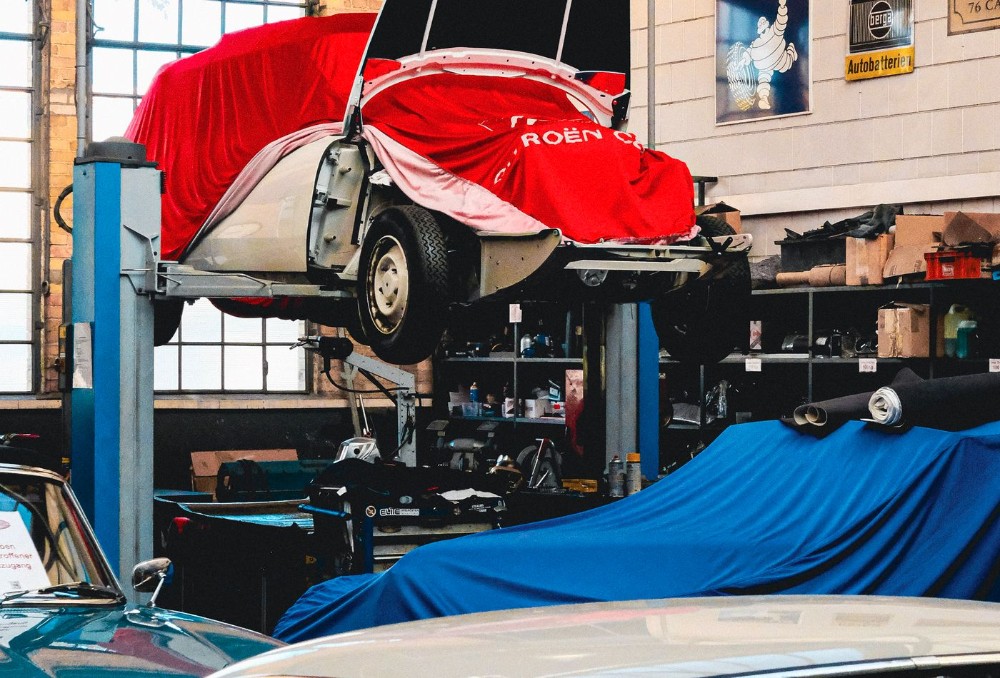
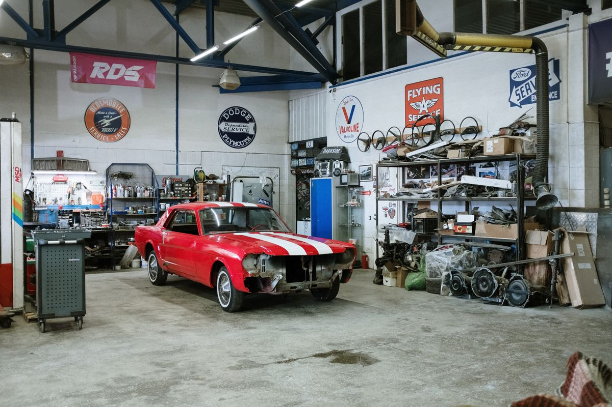

A Garagem Clássica nasceu da vontade de tornar a compra e a venda de um clássico um processo tranquilo e transparente. Cada carro que passa por aqui é avaliado por inteiro: motor, lataria, originalidade, documentação e histórico de manutenção.
Cuidamos de tudo — do anúncio à entrega. Buscamos o comprador no aeroporto, organizamos o transporte, acompanhamos a vistoria e o test-drive. Você só precisa aproveitar a direção.

Também fazemos consultoria antes da compra: analisamos o veículo que você está de olho, apontamos o que precisa de atenção e ajudamos a negociar um preço justo. Depois do negócio fechado, indicamos mecânicos e fornecedores de peças de confiança para manter o clássico rodando.